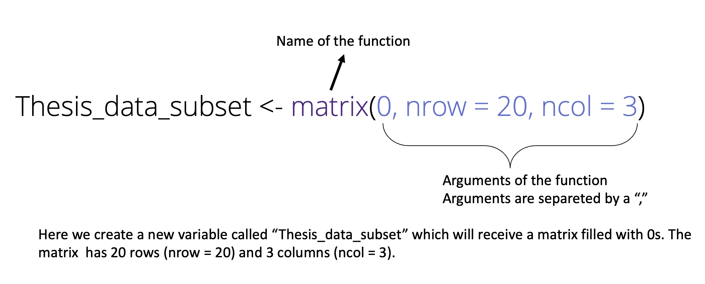

print("This is how we use the print function in R")[1] "This is how we use the print function in R"Janpieter van der Pol
For this first session, the goal for you is to learn the following operations:
| R | Python | Example R | Example Python | |
|---|---|---|---|---|
| Load a library | library(dplyr) | import pandas as pd | ||
| Create a variable | value <- 42 | value = 42 | ||
| Difference between text, values, and variables | plop <- “42” plop <- 42 plop <- fourtytwo | plop = “42” plop = 42 plop = fourtytwo | ||
| Paste | paste(“the value is”, plop) | f”The value is {plop} | ||
| print(paste(“the value is”, plop)) | print(f”The value is {plop}“) | |||
| Basic arithmetics | 42 + 48 | 42 + 48 | ||
| Vectors and lists | c(1,2,3,4,68) | [1,2,3,4,68] | ||
| Use a function | max(c(1,2,3,4,68)) | max([1,2,3,4,68]) | ||
| Use a function from a script | ||||
| Use logic operators | a != b | a != b |
R and Python come with basic, build-in functions. This means that when you launch R/Python you can use these functions directly. This is the case for the print function for example.
Think of Python as a basic toolbox. This toolbox comes with some essential tools, like a hammer (the print() function), a screwdriver (the len() function), and a measuring tape (the max() function). These tools are available right away because they’re built into the toolbox (Python).
However, sometimes you need more specialized tools that aren’t in the basic toolbox. For example, if you want to build a bookshelf, you might need a power drill or a saw. These tools aren’t included by default in the basic toolbox. In the world of Python, these extra tools are called packages.
A package is like an extra toolbox full of new tools (functions) that someone else has created for a specific purpose. For example:
If you want to work with data in tables (like Excel), you’d install the pandas package. If you want to make graphs, you might need the matplotlib package. When you install a package, it’s like going to the store, buying the specialized toolbox, and adding it to your existing set of tools. Once installed, you can use the new tools (functions) it provides.
Let’s see how we install packages in R and python:
We only have to install packages once. Once they are installed we only need to thell R/Python that we want to use the functions from these packages. we do this in the following way:
You only have to load the packages once when you start working. Reload is only necessary if you have quit R/Python. Usually when you get the following error messages, this means that you did not load the package and therefore R/python cannot find the function you are trying to load:
Install required packages in R:
Install the following packages in R: tidyverse, ggplot2, igraph
Install required packages in Python: Install the following packages in Python: pandas, numpy, matplotlib
A variable is like a container or a labeled storage box that holds data or information. In programming, we use variables to store values—such as numbers, text, or more complex data—so that we can easily refer to and manipulate them throughout our code.
Why do we create variables?
Creating the variables a, b and result, allows us to use them later in the code. Beyond simple numerical values, other variables are created in an identical manner. In R, using “<-” assigns the value/object on the right to the variable on the left. In python the logic is the same, but we use the “=” operator.
# in python we first need to load a package to use a function to create a matrix
# we load numpy
import numpy as np
# then we create a matrix called "small_matrix"
# this matrix is created by the "zeros" function from the np (numpy) package
small_matrix = np.zeros((3, 3))
print(small_matrix)[[0. 0. 0.]
[0. 0. 0.]
[0. 0. 0.]]In the examples above, we create a new variables small_matrix which contains a matrix. We can then use this later by referring to the name of the object. Below we add 3 to each cell of the matrix:
By writing the same name on the left and righ, the object Small_matrix is replaced by Small_matrix + 3 which means tha we cannot go back to the initial Small_matrix filled with 0’s.
If we want to keep both variables, we need can create a new variables:
This creates a new object with the name Small_matrix_3.
What is the difference between a variable and an object? Why are small_matrix and Small_matrix_3 considered both a variable and an object?
A variable is a name used to store data. It acts like a label or container for a value. For example, when we write small_matrix = np.zeros((3, 3)), small_matrix is a variable that holds the matrix.
An object is an instance of a class in Python. In this case, the value stored in small_matrix is an object of the numpy.ndarray class. This object has properties (like its shape) and methods (like matrix operations) that you can use.
Therefore, small_matrix is a variable (a name for storing data) and also an object (the data itself, which is a matrix object).
Create a Matrix:
In both R and Python, write a code to create a 4x4 matrix filled with zeros. What is the variable’s name, and what type of object does it store?
Variable Assignment:
Assign the number 10 to a variable named my_number. What happens if you assign a new value, like 20, to the same variable afterward? Explain the behavior of variables in Python.
Matrix Operations:
Perform an operation that adds 5 to each element in the matrix you created in question 1.
Remember to think about how variables and objects work together in Python as you complete each task.
A variable is like a labeled container that holds information (data). You give this container a name, and you can store anything inside it—like numbers, words, or even more complex data. An important distinction to make is the difference between numerical values and textual values. When we create a variable and a assign a number, this means we can later use this for mathematical operations. This needs to be differentiated from assigning the textual value “42”.
Any value between “ is understood as text by python and R. This means that if we try to multiply variable by a number, we get an error in R and an unexpected output in Python.
A binary operator is for example +, -, /. When we try to use non-numeric values (here, “42”) then we get this error message. In python, the output is not an error, the string is simply multiplied literlly, resulting in a new string that is twice the previous sring: “4242” (which is not a number, still a string).
It’s good practice, especially when loading data from an external source for the first time, to check the format of the data, i.e ensuring that what you want to be numbers are numbers, and what you want to be text is indeed, text.
int)
5, -42, 100float)3.14, -0.001, 42.0str)"Hello, world!", 'Python'bool)True or False. Booleans are often used in conditions and logical operations.True, Falsebool) type, where logical conditions return True or False.a == b might evaluate to True or False.Check numeric values:
Assign numeric values to 2 variables. You can name them however you want and assign any numerical value. Check the format of the variable
Check textual values:
Assign a textual value to 2 variables. You can name them however you want and assign any numerical value. Check the format of the variable.
Logical operators are commonly used in data analysis, especially when sub-setting datasets. For example when we want to extract documents that are from the year 2000 which have the term “sustainability” and the term “climate change” but not the term “fossil fuel”. Combining these operators is important, and so is understanding how they work.
Some differences between R and Python become apparent here. In R, TRUE and FALSE must be written in all caps to be recognised as the logical operator. In Python, True and False must start with a capitalized letter. or, and, not should also be written exactly in this manner.If these operators are written differently, they will be recognized as objects.
In data analysis, we usually use operators to subset data. This means that we compare a variable to a value to check if it fits our criteria. For example, if we have a column that contains a year, and we only want observations with the year 2003, we will search for year == 2003. In this setting the R operators we just described will be the same. It is possible that these operators varie when different packages are used in python. For instance, in the context of the pandas package, and becomes &, or becomes |, not becomes ~. We will adress these variations in the database manipulation chapter.
x is equal to 10 and print "Equal" if it is, otherwise print "Not equal".age and has_permission. Write a condition that checks if age is greater than or equal to 18 and has_permission is True (or TRUE in R). Print "Access granted" if both conditions are met, otherwise print "Access denied".n is less than 5 or greater than 20. If either condition is True, print "Out of bounds", otherwise print "Within bounds".logged_in that is either True or False. Write a condition using the not operator (or ! in R) to print "Access restricted" if the user is not logged in.x is between 10 and 50 and either x is even or x is divisible by 7. Print a message that reflects the result.The print function is crucial in programming because it allows developers to display information to the user or themselves during the development process. It provides immediate feedback, helping programmers debug code by checking the values of variables, verifying the flow of execution, or ensuring that certain conditions are met. Without print, it would be challenging to observe how the program behaves internally, making it a vital tool for both learning and real-world software development.
A very basic example of this is printng out the value of a variable in the context of what it represents. Imagine that we are working on a project in which we start with some raw data, that we clean, step by step before we can start using it for a regression. In this process we remove missing values, outdates values, we might removes some regions etc. To make sure we don’t remove to much data, or even just to be sure we don’t make a mistake, we can decide to print out some information at different steps. The print function allows us to print out this type of information:
We can make things more interesting by combining values and text. For this we use the paste function in R and the “+” operator in python:
# lets create a value at random and then print out the sentence: "the number generated was x"
# we use the runif function to generate a value
# this function takes three arguments, n, min and max.
# n is the number of numbers we want to generate, min and max are the boundaries for the value
x <- runif(1, min = 0, max = 5)
# here we generate one number with a value between 0 and 5.
# Now we want to print out the sentence "the number generated was x"
# for this we are going to paste the text "the number generated was" and the value of x:
paste("The number generated was ", x)[1] "The number generated was 1.9385297910776"# the paste function can take as many argument as you want, it will paste all of them together
# Now if we want to print the result:
print(paste("The number generated was ", x))[1] "The number generated was 1.9385297910776"import random
# Generate a random value between 0 and 5 using random.uniform()
x = random.uniform(0, 5)
# Print out the sentence "The number generated was x" using an f-string (formatted string)
# to print a combination of text and variables, put an "f" before the string
# put the name of the variable between {}:
message = f"The number generated was {x}"
print(message)The number generated was 2.3894315922529907paste() and print()
runif() function in R or random.uniform() in Python. Print a sentence that says, “The generated number is x”, where x is the random number.R and python can be quite different when it comes to using functions. We will discuss them separately.
Calling a function always works in the same way in R, the construction always follows:

Which arguments a function needs, and the format of these arguments can always be found in the help of rstudio. If you’re unsure how a function works, look it up, there is also always an example at the end of the help page.
We can combine multiple functions in one line of code. The following creates a matrix and then transforms the matrix into a dataframe.
An alternative exists in base R to make this easier to read. We can use what is called a pipe: “|>”:
This line creates the matrix and then applies the as.data.frame() function. Equivalent to this is the pipe that we find in the tidyverse:
The latter is often found in data science with R manuals.
We do not expect you to make your own functions. We only want you to be able to identify costum functions in a script.
In R, a function is defined by the function function…let me clarify:
We create here a new function called my_own_function, which has one argument. Everything between brackets is the codes that is executed when the function is called.
For example, we could make a function that returns a greeting when supplied with a name. In other words, when you enter a name, the function will return “Hi, name”:
We create a function called “greet” which takes one argument which is the name. It then returns the text “Hi, name”.
If you see a function in a script, all you have to do is run the code once. This will load the function, just like the import function. You are then ready to use the function.
When you see something between parentheses in Python, it usually indicates:
You’re calling a function, and the value between parentheses is an argument being passed to the function. For example, print(“Hello”) calls the print() function with the argument “Hello”.
In Python, dot notation (.) is used to access attributes or methods (functions) of objects. For example, numpy is a package that provides arrays and various mathematical functions, and you access specific functionality within numpy using dot notation. For example:
In this case, data is a NumPy array object, and data.shape is an attribute (a property) that tells us the dimensions of the array. The dot (.) is used to access this attribute from the data object.
Similarly, if you call a method of an object (a function that belongs to the object), you also use dot notation with parentheses:
We do not expect you to make your own functions. We only want you to be able to identify costum functions in a script.
In Python, functions are defined using the def keyword, followed by the function name, parentheses (), and a colon :. Inside the parentheses, you can specify any input parameters (arguments) that the function will take. The code that the function executes is indented, and you can use the return statement to send back a result:
For example, we could make a function that returns a greeting when supplied with a name. In other words, when you enter a name, the function will return “Hi, name”:
We create a function called “greet” which takes one argument which is the name. It then returns the text “Hi, name”.
If you see a function in a script, all you have to do is run the code once. This will load the function, just like the import function. You are then ready to use the function.